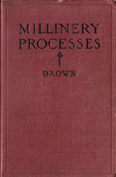
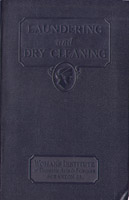
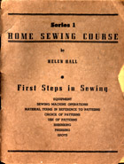

1930-1939
1930
Paris Frocks at Home
Published by the Butterick company, this book explains how to use your Butterick patterns, and give your frocks that "Paris air." Some basic sewing is covered. Illustrations are mostly line drawings.
Go to Table of Contents - Lists lesson titles
Millinery Processes, by Carlotta M. Brown
Techniques to construct hats, including bindings, blocks and blocking, brimg coverings, crown coverings, facings, folds, linings, as well as a how to make flower and fruit ornaments, and bows. Also has a section on renovation and care of hats and hat materials (including how to clean and dye hats) and how to make a hat box. A section on how to select hats has line drawings of styles of hat to choose or avoid based on the shape of your face, type of features, and age. Yes, it also includes the obligatory section on color. (182 pages)
1931
 Laundering and Dry Cleaning
Home Laundering and Dry Cleaning, The Woman's Institute of Domestic Arts and Sciences. 1931, 1925
Besides an interesting look at the labor-intensive chore that home laundry used to be, it explains the process of dry cleaning and includes detailed instructions for using chemicals to dry clean your apparel at home, including gloves, furs, feathers, and laces. (54 pages)
1933
Principles of Tailoring
Essentials of Tailoring; Tailored Seams and Plackets; Tailored Buttonholes, Buttons, and Trimmings, and Tailored Pockets. The Woman's Institute of Domestic Arts and Sciences. 1933, 1925, 1923, 1916
Clear instructions with photographs and drawings.
1936
Home Sewing Course, by Helen Hall
Eight books (48 pages each) illustrated with simple line drawings.
Go to Short Index - Lists title of each book
Go to Long Index - Lists some of the lessons within each book
Check the candidates' page to see what else will eventually be available.